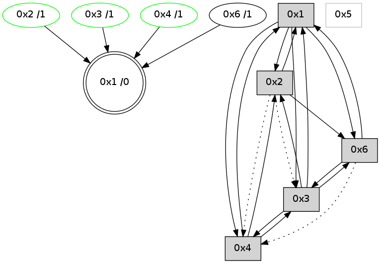

>> << IDX [start] -100 -25 -5 +0 +5 +25 +100 [690.08528018]
 Previous packets
----------------------------------------------------------------------
685.164196 beacon01(adaf) #0 coord=01,02,05,03,04,06 cycle=432.0ms assoc
-- color-indic=0 64 71 e9
685.174157 beacon02(adaf) #0 coord=01,02,05,03,04,06 cycle=432.0ms assoc 64 20 16
685.194158 beacon03(adaf) #0 coord=01,02,05,03,04,06 cycle=432.0ms assoc 64 1a 18
685.204159 beacon04(adaf) #0 coord=01,02,05,03,04,06 cycle=432.0ms assoc 64 bc 32
685.225687 [Hello(1): seq=386 sym=2,6 sysInfo= stat=2:12,0,6,1/6:3,0,3,0]
685.229563 [Hello(4): seq=487 sym=3,1 sysInfo= stat=3:12,0,6,1/1:6,0,15,0]
----------------------------------------------------------------------
685.656303 beacon01(adaf) #0 coord=01,02,05,03,04,06 cycle=432.0ms assoc
-- color-indic=0 64 b5 86
685.666264 beacon02(adaf) #0 coord=01,02,05,03,04,06 cycle=432.0ms assoc 64 e4 79
685.676264 beacon05(adaf) #0 coord=01,02,05,03,04,06 cycle=432.0ms assoc 64 42 53
685.686265 beacon03(adaf) #0 coord=01,02,05,03,04,06 cycle=432.0ms assoc 64 de 77
685.696265 beacon04(adaf) #0 coord=01,02,05,03,04,06 cycle=432.0ms assoc 64 78 5d
685.706265 beacon06(adaf) #0 coord=01,02,05,03,04,06 cycle=432.0ms assoc 64 0c 41
685.717892 [STC(1) #0.19 to-color d=0]
685.721620 [Hello(2): seq=980 sym=6,1 asym=4 sysInfo= stat=6:10,0,2,0/1:4,0,14,0/4:0,0,0,0]
----------------------------------------------------------------------
686.148412 beacon01(adaf) #0 coord=01,02,05,03,04,06 cycle=432.0ms assoc
-- color-indic=0 64 f9 36
686.158372 beacon02(adaf) #0 coord=01,02,05,03,04,06 cycle=432.0ms assoc 64 a8 c9
686.168373 beacon05(adaf) #0 coord=01,02,05,03,04,06 cycle=432.0ms assoc 64 0e e3
686.178374 beacon03(adaf) #0 coord=01,02,05,03,04,06 cycle=432.0ms assoc 64 92 c7
686.188375 beacon04(adaf) #0 coord=01,02,05,03,04,06 cycle=432.0ms assoc 64 34 ed
686.198374 beacon06(adaf) #0 coord=01,02,05,03,04,06 cycle=432.0ms assoc 64 40 f1
686.209466 [Hello(1): seq=387 sym=2,4,6 sysInfo= stat=2:13,0,6,1/4:0,0,0,0/6:3,0,3,0]
686.211991 [Hello(4): seq=488 sym=3,1 sysInfo= stat=3:13,0,6,1/1:6,0,0,0]
686.213945 [Hello(6): seq=402 sym=3,1 asym=4 sysInfo=hasWarning stat=3:0,0,6,1/1:15,0,0,0/4:0,0,0,0]
686.216593 [STC(4)->1 #0.19 stable,to-color d=1]
686.219206 [TreeStatus(4)-.->1 #0.19 stable child=1]
686.221328 [STC(6)->1 #0.19 to-color d=1]
----------------------------------------------------------------------
686.640519 beacon01(adaf) #0 coord=01,02,05,03,04,06 cycle=432.0ms assoc
-- color-indic=0 64 3d 59
686.650481 beacon02(adaf) #0 coord=01,02,05,03,04,06 cycle=432.0ms assoc 64 6c a6
686.660480 beacon05(adaf) #0 coord=01,02,05,03,04,06 cycle=432.0ms assoc 64 ca 8c
686.670482 beacon03(adaf) #0 coord=01,02,05,03,04,06 cycle=432.0ms assoc 64 56 a8
686.680481 beacon04(adaf) #0 coord=01,02,05,03,04,06 cycle=432.0ms assoc 64 f0 82
686.690481 beacon06(adaf) #0 coord=01,02,05,03,04,06 cycle=432.0ms assoc 64 84 9e
686.702189 [Hello(2): seq=981 sym=6,1 asym=4 sysInfo= stat=6:10,0,3,0/1:5,0,14,0/4:1,0,1,1]
----------------------------------------------------------------------
687.132629 beacon01(adaf) #0 coord=01,02,05,03,04,06 cycle=432.0ms assoc
-- color-indic=0 64 45 f4
687.142591 beacon02(adaf) #0 coord=01,02,05,03,04,06 cycle=432.0ms assoc 64 14 0b
687.152590 beacon05(adaf) #0 coord=01,02,05,03,04,06 cycle=432.0ms assoc 64 b2 21
687.162592 beacon03(adaf) #0 coord=01,02,05,03,04,06 cycle=432.0ms assoc 64 2e 05
687.172591 beacon04(adaf) #0 coord=01,02,05,03,04,06 cycle=432.0ms assoc 64 88 2f
687.182592 beacon06(adaf) #0 coord=01,02,05,03,04,06 cycle=432.0ms assoc 64 fc 33
687.193701 [Hello(1): seq=388 sym=2,4,6 sysInfo= stat=2:14,0,6,1/4:1,0,1,1/6:3,0,4,0]
687.197898 [Hello(4): seq=489 sym=3,1 sysInfo= stat=3:14,0,6,1/1:7,0,0,0]
----------------------------------------------------------------------
687.624738 beacon01(adaf) #0 coord=01,02,05,03,04,06 cycle=432.0ms assoc
-- color-indic=0 64 81 9b
687.644701 beacon05(adaf) #0 coord=01,02,05,03,04,06 cycle=432.0ms assoc 64 76 4e
687.674701 beacon06(adaf) #0 coord=01,02,05,03,04,06 cycle=432.0ms assoc 64 38 5c
687.686159 [Hello(3): seq=488 sym=4,1,6 sysInfo= stat=4:1,0,1,1/1:6,0,12,0/6:3,0,8,0]
----------------------------------------------------------------------
688.116847 beacon01(adaf) #0 coord=01,02,05,03,04,06 cycle=432.0ms assoc
-- color-indic=0 64 cd 2b
688.126808 beacon02(adaf) #0 coord=01,02,05,03,04,06 cycle=432.0ms assoc 64 9c d4
688.136808 beacon05(adaf) #0 coord=01,02,05,03,04,06 cycle=432.0ms assoc 64 3a fe
688.146809 beacon03(adaf) #0 coord=01,02,05,03,04,06 cycle=432.0ms assoc 64 a6 da
688.156809 beacon04(adaf) #0 coord=01,02,05,03,04,06 cycle=432.0ms assoc 64 00 f0
688.166809 beacon06(adaf) #0 coord=01,02,05,03,04,06 cycle=432.0ms assoc 64 74 ec
688.178469 [Hello(4): seq=490 sym=3,1 sysInfo= stat=3:15,0,6,1/1:7,0,0,0]
688.181867 [Hello(1): seq=389 sym=2,4,3,6 sysInfo= stat=2:14,0,6,1/4:1,0,1,1/3:0,0,0,0/6:4,0,4,0]
688.183936 [Hello(2): seq=982 sym=6,1 asym=4,3 sysInfo= stat=6:11,0,3,0/1:6,0,14,0/4:1,0,1,1/3:0,0,0,0]
688.188162 [STC(1) #0.20 to-color d=0]
----------------------------------------------------------------------
688.608954 beacon01(adaf) #0 coord=01,02,05,03,04,06 cycle=432.0ms assoc
-- color-indic=0 64 09 44
688.618916 beacon02(adaf) #0 coord=01,02,05,03,04,06 cycle=432.0ms assoc 64 58 bb
688.628916 beacon05(adaf) #0 coord=01,02,05,03,04,06 cycle=432.0ms assoc 64 fe 91
688.638915 beacon03(adaf) #0 coord=01,02,05,03,04,06 cycle=432.0ms assoc 64 62 b5
688.648918 beacon04(adaf) #0 coord=01,02,05,03,04,06 cycle=432.0ms assoc 64 c4 9f
688.658917 beacon06(adaf) #0 coord=01,02,05,03,04,06 cycle=432.0ms assoc 64 b0 83
688.670473 [STC(6)->1 #0.20 to-color d=1]
688.674339 [STC(4)->1 #0.20 stable,to-color d=1]
688.676433 [Hello(3): seq=489 sym=4,2,1,6 sysInfo= stat=4:1,0,1,1/2:0,0,0,0/1:7,0,13,0/6:4,0,8,0]
688.679560 [STC(3)->1 #0.20 stable,to-color d=1]
688.685183 [TreeStatus(3)-.->1 #0.20 stable child=1]
----------------------------------------------------------------------
689.101063 beacon01(adaf) #0 coord=01,02,05,03,04,06 cycle=432.0ms assoc
-- color-indic=0 64 44 43
689.111027 beacon02(adaf) #0 coord=01,02,05,03,04,06 cycle=432.0ms assoc 64 15 bc
689.121026 beacon05(adaf) #0 coord=01,02,05,03,04,06 cycle=432.0ms assoc 64 b3 96
689.131025 beacon03(adaf) #0 coord=01,02,05,03,04,06 cycle=432.0ms assoc 64 2f b2
689.141025 beacon04(adaf) #0 coord=01,02,05,03,04,06 cycle=432.0ms assoc 64 89 98
689.151025 beacon06(adaf) #0 coord=01,02,05,03,04,06 cycle=432.0ms assoc 64 fd 84
689.162700 [Hello(4): seq=491 sym=2,3,1 sysInfo= stat=2:0,0,0,0/3:15,0,6,2/1:8,0,1,0]
689.169782 [Hello(1): seq=390 sym=2,4,3,6 sysInfo= stat=2:14,0,7,2/4:1,0,1,1/3:1,0,1,1/6:4,0,5,0]
----------------------------------------------------------------------
689.593171 beacon01(adaf) #0 coord=01,02,05,03,04,06 cycle=432.0ms assoc
-- color-indic=0 64 80 2c
689.603132 beacon02(adaf) #0 coord=01,02,05,03,04,06 cycle=432.0ms assoc 64 d1 d3
689.613132 beacon05(adaf) #0 coord=01,02,05,03,04,06 cycle=432.0ms assoc 64 77 f9
689.623133 beacon03(adaf) #0 coord=01,02,05,03,04,06 cycle=432.0ms assoc 64 eb dd
689.633133 beacon04(adaf) #0 coord=01,02,05,03,04,06 cycle=432.0ms assoc 64 4d f7
689.643133 beacon06(adaf) #0 coord=01,02,05,03,04,06 cycle=432.0ms assoc 64 39 eb
689.654820 [Hello(3): seq=490 sym=4,2,1,6 sysInfo= stat=4:1,0,1,1/2:0,0,0,0/1:8,0,13,0/6:5,0,8,0]